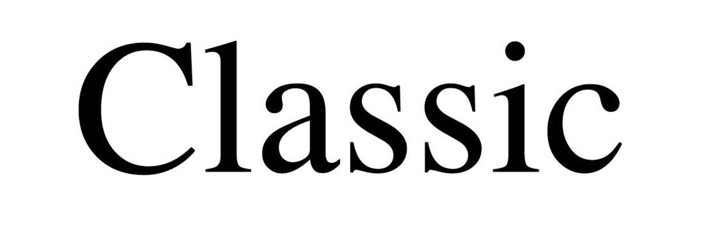

КАСКО "Классика"
КАСКО "Классика" — классический страховой продукт для владельцев автомобилей, который защищает от финансовых потерь при наступлении различных непредвиденных событий. Полис КАСКО покрывает такие риски, как ДТП, действия третьих лиц, природные явления, пожар, и угон. Основная особенность "Классики" — возможность адаптировать полис под ваши нужды.
Основные покрытия КАСКО "Классика"
- Ущерб: покрытие ущерба, включая ремонт кузова, стекол, фар, зеркал, и защиту от природных бедствий.
- Угон или хищение: возмещение стоимости автомобиля или его рыночной стоимости при угоне.
- Пожар и взрыв: покрытие ущерба в случае возгорания, взрыва или короткого замыкания.
- Противоправные действия третьих лиц: защита от вандализма и умышленных повреждений.
Дополнительные опции и особенности
- Страхование стекол и оптики: дополнительная защита фар, стекол и зеркал.
- Выезд аварийного комиссара: прибытие комиссара для документирования и помощи на месте ДТП.
- Эвакуация автомобиля: возможность эвакуации авто при страховом случае.
- Агрегатная или неагрегатная страховая сумма: выбор способа выплаты с учетом износа или без него.
- Независимая экспертиза и сервисы-партнеры: возможность быстрой оценки ущерба и обслуживания в сертифицированных центрах.
Преимущества КАСКО "Классика"
- Широкое покрытие основных рисков при эксплуатации авто.
- Гибкость и индивидуализация: возможность выбора опций под ваши нужды.
- Сервисное обслуживание и помощь на дороге.
- Дополнительная защита от природных катастроф и действий третьих лиц.
КАСКО "Классика" — оптимальный выбор для тех, кто хочет надежную защиту автомобиля от наиболее распространенных рисков, сохраняя баланс между стоимостью и покрытием.
Поиск по страничке: